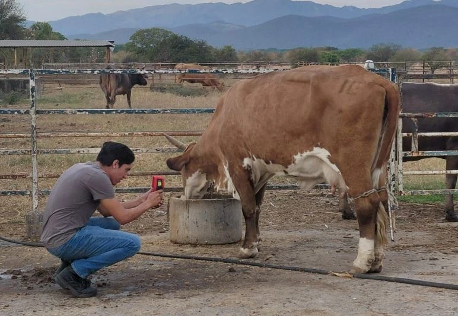
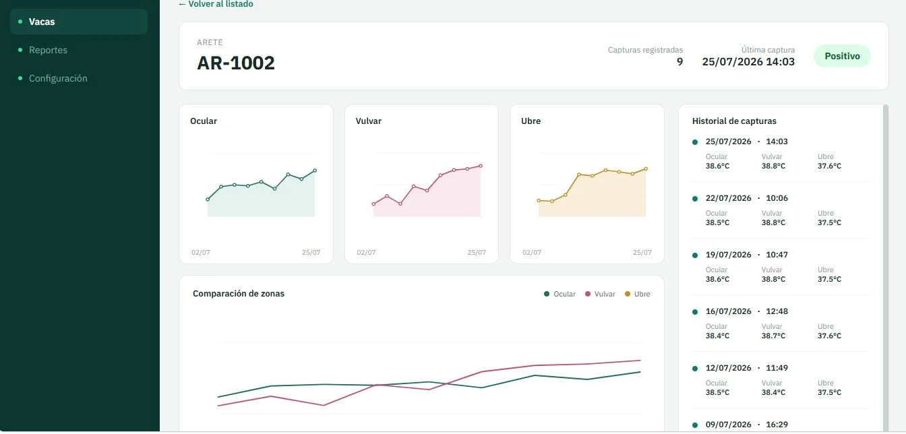

InnovaTecNM 2026 · Etapa Regional
SMEB
Sistema de Monitoreo de Embriones Bovinos
Termografía infrarroja al servicio de la reproducción bovina.
SMEB transforma datos térmicos en información para el monitoreo reproductivo bovino: una propuesta tecnológica no invasiva para apoyar la detección oportuna del celo.

El problema
El momento que no puede perderse
La eficiencia reproductiva es determinante para la rentabilidad ganadera. Detectar el celo en el momento correcto define si una vaca inicia un nuevo ciclo reproductivo a tiempo o si esa oportunidad se pierde.
Datos documentados en la investigación e información del proyecto.
¿Y si pudiéramos detectar cambios fisiológicos sin tocar al animal?
SMEB es una propuesta de monitoreo no invasivo que combina termografía infrarroja, IoT y análisis de datos para apoyar el seguimiento reproductivo bovino.
El viaje del dato
Así está pensado el recorrido de la información dentro de SMEB, desde el animal hasta la alerta.
Vaca
Punto de partida: el animal en su entorno habitual, sin contacto físico necesario para la medición.
Cámara infrarroja
Captura la temperatura superficial de regiones anatómicas específicas.
ESP32
Nodo/controlador que gestiona la captura y el envío de los datos.
Wi-Fi
Conectividad para transmitir la información capturada.
Nube
Almacenamiento centralizado de los datos térmicos.
Análisis
Comparación contra la línea base individual de cada animal.
Dashboard
Visualización del historial, la temperatura y las alertas.
Alerta
Aviso ante un posible evento reproductivo relevante.
¿Qué observamos?
Cuatro regiones, cuatro ventanas
SMEB considera cuatro regiones anatómicas como parte de su estrategia de monitoreo térmico. Toca cada punto para conocer más.
Región ocular
Zona del ojo, considerada dentro de las regiones monitoreadas por su sensibilidad a cambios fisiológicos.
Región abdominal / media
Zona media del cuerpo del animal, incluida como parte de la estrategia de monitoreo.
Región mamaria
Zona de la ubre, considerada por su relación con procesos fisiológicos del ciclo reproductivo.
Región vulvar
Zona vulvar, una de las regiones anatómicas contempladas en el protocolo de monitoreo.
Del dato a la decisión
Cada vaca, su propia referencia
Captura térmica
Se registra la temperatura de las regiones consideradas.
Línea base individual
Cada animal cuenta con su propia referencia histórica.
Comparación
El dato nuevo se compara contra esa línea base, no contra un valor fijo.
Detección de variación
Se identifican cambios relevantes respecto al comportamiento individual.
Alerta
Se genera un aviso cuando la variación es consistente con el protocolo.
Decisión
La información queda disponible para apoyar la decisión del productor o del médico veterinario.
SMEB no interpreta el sistema como "temperatura alta = celo". El concepto se basa en comparar cada animal contra su propia línea base individual.
Del concepto a una plataforma
Desarrollamos un prototipo de plataforma web para visualizar el monitoreo térmico, las alertas y el seguimiento individual de los animales. Es nuestro principal prototipo demostrable actualmente: no representa un sistema físico completo ya instalado y conectado en campo.

Lo que ya demostramos
Una primera prueba de concepto con captura manual de datos, no una validación estadística definitiva del sistema completo.
Razas incluidas:
Edades: 3–8 años.
Vaca #7
Durante el día 4 se registró una temperatura ocular de 38.2 °C, considerada consistente con el umbral establecido en el protocolo para emitir una alerta.
“Este resultado confirma que el sistema puede detectar celo de forma manual hoy, y de forma automatizada mañana.”
SMEB frente a métodos convencionales
Una comparación conceptual
| Variable | Observación visual | Métodos tradicionales | SMEB |
|---|---|---|---|
| Contacto físico | Frecuente | Frecuente | Sin contacto |
| Continuidad | Puntual | Puntual | Capturas programadas |
| Automatización | No | No | Contemplada como meta |
| Monitoreo remoto | No | No | A través del dashboard |
| Análisis basado en datos | No | Limitado | Comparación contra línea base individual |
SMEB se presenta como una herramienta tecnológica de apoyo, no como sustituto de la atención veterinaria.
Tecnología
Componentes del sistema
Tecnología contemplada
Termografía infrarroja
Captura de temperatura superficial mediante cámara infrarroja.
ESP32
Controlador para la captura y transmisión de datos.
Wi-Fi
Conectividad para el envío de información a la nube.
Prototipo actualmente demostrable Demostrado
Nube
Almacenamiento de la información registrada.
Plataforma web
Dashboard funcional para visualizar historial y alertas.
Análisis de datos
Comparación contra la línea base individual de cada animal.
La cámara física y la infraestructura IoT completa forman parte del desarrollo tecnológico propuesto. El dashboard constituye nuestro principal prototipo actual.
Impacto
Hacia dónde apunta SMEB
Reproducción
Mejor seguimiento de eventos reproductivos.
Bienestar animal
Monitoreo sin contacto físico.
Productividad
Información para apoyar decisiones reproductivas.
Transformación digital
Aplicación de IoT y análisis de datos al sector agropecuario.
Lo que queremos lograr
- Construir e integrar el sistema físico.
- Automatizar la captura de datos.
- Validar el sistema con un número mayor de animales.
- Mejorar la detección automatizada.
- Desarrollar el monitoreo reproductivo continuo.
- Ampliar la plataforma.
- Realizar pruebas en condiciones reales de producción.
Modelo de implementación
Cómo se pondría en marcha
Implementación
Instalación y puesta en marcha.
Plataforma
Visualización y seguimiento de información.
Mantenimiento
Soporte y continuidad tecnológica.
Escalabilidad
Posibilidad de adaptar el sistema a diferentes tamaños de producción.
La ciencia identifica el problema.
La tecnología nos permite observarlo de otra manera.
SMEB
Sistema de Monitoreo de Embriones Bovinos
InnovaTecNM 2026 · Instituto Tecnológico de Nuevo León